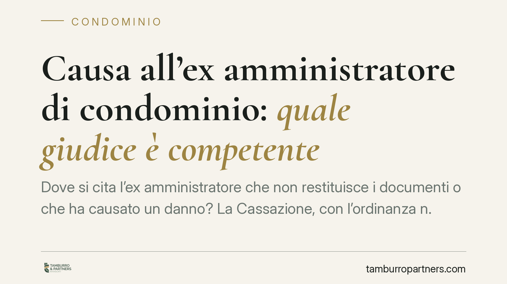

Causa all'ex amministratore di condominio: quale giudice è competente
Dove si cita l'ex amministratore che non restituisce i documenti o che ha causato un danno? La Cassazione, con l'ordinanza n. 3719/2026, chiarisce che queste controversie nascono dal mandato e seguono i criteri ordinari di competenza territoriale, non il foro speciale del condominio. Una precisazione rilevante per i condominii che intendono agire.

Il caso
Quando il rapporto con l'amministratore si chiude in modo conflittuale, due sono le liti più frequenti: la richiesta di restituzione della documentazione condominiale e la domanda di risarcimento per una gestione scorretta. In entrambi i casi il condominio, di regola rappresentato dal nuovo amministratore, deve decidere davanti a quale tribunale incardinare la causa.
La Corte di Cassazione, con l'ordinanza n. 3719/2026, ha fornito una risposta netta: queste controversie non seguono il foro speciale previsto per le liti condominiali, ma i criteri ordinari di competenza territoriale.
Inquadramento normativo
Il punto di partenza è la qualificazione del rapporto. Tra condominio e amministratore esiste un contratto di mandato: l'amministratore gestisce beni e interessi altrui per conto dei condòmini. Di conseguenza, gli obblighi che permangono dopo la cessazione dell'incarico — su tutti la consegna dei documenti ai sensi dell'art. 1713 cod. civ. (obbligo del mandatario di rendere conto e restituire ciò che ha ricevuto) — hanno natura contrattuale.
Da questa qualificazione discende la competenza. Non si applica il foro previsto dall'art. 23 cod. proc. civ. per le cause tra condòmini o tra condominio e condòmini, perché l'ex amministratore, una volta cessato, non è parte interna alla compagine condominiale: è un terzo legato da un rapporto obbligatorio ormai concluso.
Si applicano invece i fori ordinari: il foro generale della persona fisica, individuato in base alla residenza o al domicilio del convenuto (art. 18 cod. proc. civ.); i fori generali per le persone giuridiche (art. 19 cod. proc. civ.); e il foro facoltativo per le cause relative a obbligazioni (art. 20 cod. proc. civ.), che consente di agire anche nel luogo in cui l'obbligazione è sorta o deve essere eseguita.
Implicazioni pratiche
Per il condominio la differenza non è teorica. Ritenere applicabile il foro condominiale significherebbe, in molti casi, incardinare la causa nel luogo dove si trova l'edificio. La Cassazione esclude questa scorciatoia.
Il convenuto è l'ex amministratore come persona (o come società), e la competenza va calcolata guardando alla sua residenza o sede, oppure al luogo di esecuzione dell'obbligazione. Per la restituzione dei documenti, il luogo di adempimento può non coincidere con quello dell'immobile amministrato: va verificato caso per caso.
L'errore sulla competenza territoriale non è neutro. Una citazione davanti al giudice sbagliato espone a un'eccezione di incompetenza, con allungamento dei tempi e rischio di dover riassumere la causa altrove. In materie dove la rapidità conta — pensiamo alla documentazione necessaria per approvare i bilanci o per gestire contenziosi pendenti — il ritardo ha un costo concreto.
Va ricordato che l'obbligo di consegna è immediato alla cessazione dell'incarico. Il nuovo amministratore ha interesse ad attivarsi tempestivamente, anche perché la mancata disponibilità dei documenti può compromettere la gestione ordinaria.
Cosa fare in concreto
- Verificate la residenza o la sede dell'ex amministratore prima di redigere l'atto: è il primo criterio di competenza da considerare (artt. 18 e 19 cod. proc. civ.).
- Valutate il foro delle obbligazioni ex art. 20 cod. proc. civ.: in alcuni casi consente di agire in un luogo più comodo rispetto al foro generale del convenuto.
- Documentate la richiesta di restituzione con una diffida formale e tracciabile, indicando un termine: rafforza la posizione in giudizio e fissa l'inadempimento.
- Separate le domande di restituzione documenti e di risarcimento, ragionando sulla strategia processuale più efficiente anche in termini di competenza.
- Deliberate correttamente l'azione in assemblea quando richiesto, per evitare contestazioni sulla legittimazione del nuovo amministratore ad agire.
L'ordinanza conferma un principio di ordine: chiuso il mandato, l'ex amministratore risponde come qualunque contraente inadempiente. Impostare da subito la competenza nel modo corretto evita di trasformare una lite già fondata in un contenzioso sulla sede del giudice.
---
*Contributo informativo a cura di Tamburro & Partners - Avv. Giuseppe Tamburro. Non costituisce parere legale.*
Ogni condominio ha una storia a sé.
Se gestisci un'amministrazione e vuoi un confronto su una specifica questione condominiale, scrivi allo studio. Ti rispondiamo entro un giorno lavorativo.